library(MASS)
library(pls) # PC / PLS
library(glmnet) # 惩罚回归
library(ncvreg) # MCP / SCAD
library(lars) # LAR
library(abess) # Best subset
library(kernlab) # 基于核的支持向量机 ksvm
library(nnet) # 神经网络 nnet
library(rpart) # 决策树
library(randomForest) # 随机森林
library(xgboost) # 梯度提升
library(lattice)
# Root Mean Squared Error 均方根误差
rmse <- function(y, y_pred) {
sqrt(mean((y - y_pred)^2))
}42 回归问题
\[ \def\bm#1{{\boldsymbol #1}} \]
本章基于波士顿郊区房价数据集 Boston 介绍处理回归问题的 10 种方法。数据集 Boston 来自 R 软件内置的 MASS 包，一共 506 条记录 14 个变量，由 Boston Standard Metropolitan Statistical Area (SMSA) 在 1970 年收集。
#> 'data.frame': 506 obs. of 14 variables:
#> $ crim : num 0.00632 0.02731 0.02729 0.03237 0.06905 ...
#> $ zn : num 18 0 0 0 0 0 12.5 12.5 12.5 12.5 ...
#> $ indus : num 2.31 7.07 7.07 2.18 2.18 2.18 7.87 7.87 7.87 7.87 ...
#> $ chas : int 0 0 0 0 0 0 0 0 0 0 ...
#> $ nox : num 0.538 0.469 0.469 0.458 0.458 0.458 0.524 0.524 0.524 0.524 ...
#> $ rm : num 6.58 6.42 7.18 7 7.15 ...
#> $ age : num 65.2 78.9 61.1 45.8 54.2 58.7 66.6 96.1 100 85.9 ...
#> $ dis : num 4.09 4.97 4.97 6.06 6.06 ...
#> $ rad : int 1 2 2 3 3 3 5 5 5 5 ...
#> $ tax : num 296 242 242 222 222 222 311 311 311 311 ...
#> $ ptratio: num 15.3 17.8 17.8 18.7 18.7 18.7 15.2 15.2 15.2 15.2 ...
#> $ black : num 397 397 393 395 397 ...
#> $ lstat : num 4.98 9.14 4.03 2.94 5.33 ...
#> $ medv : num 24 21.6 34.7 33.4 36.2 28.7 22.9 27.1 16.5 18.9 ...14 个变量的含义如下：
- crim: 城镇人均犯罪率 per capita crime rate by town
- zn: 占地面积超过25,000平方尺的住宅用地比例 proportion of residential land zoned for lots over 25,000 sq.ft.
- indus: 每个城镇非零售业务的比例 proportion of non-retail business acres per town.
- chas: 查尔斯河 Charles River dummy variable (= 1 if tract bounds river; 0 otherwise).
- nox: 氮氧化物浓度 nitrogen oxides concentration (parts per 10 million).
- rm: 每栋住宅的平均房间数量 average number of rooms per dwelling. 容积率
- age: 1940年以前建造的自住单位比例 proportion of owner-occupied units built prior to 1940. 房龄
- dis: 到波士顿五个就业中心的加权平均值 weighted mean of distances to five Boston employment centres. 商圈
- rad: 径向高速公路可达性指数 index of accessibility to radial highways. 交通
- tax: 每10,000美元的全额物业税率 full-value property-tax rate per $10,000. 物业
- ptratio: 城镇的师生比例 pupil-teacher ratio by town. 教育
- black: 城镇黑人比例 \(1000(Bk - 0.63)^2\) where Bk is the proportion of blacks by town. 安全
- lstat: 较低的人口状况（百分比）lower status of the population (percent).
- medv: 自住房屋的中位数为 1000 美元 median value of owner-occupied homes in $1000s. 房价，这是响应变量。
42.1 线性回归
对于线性回归问题，为了处理变量之间的相关关系，衍生出许多处理办法。有的办法是线性的，有的办法是非线性的。
42.1.1 最小二乘回归
\[ \mathcal{L}(\bm{\beta}) = \sum_{i=1}^{n}(y_i - \bm{x}_i^{\top}\bm{\beta})^2 \]
#>
#> Call:
#> lm(formula = medv ~ ., data = Boston)
#>
#> Residuals:
#> Min 1Q Median 3Q Max
#> -15.595 -2.730 -0.518 1.777 26.199
#>
#> Coefficients:
#> Estimate Std. Error t value Pr(>|t|)
#> (Intercept) 3.646e+01 5.103e+00 7.144 3.28e-12 ***
#> crim -1.080e-01 3.286e-02 -3.287 0.001087 **
#> zn 4.642e-02 1.373e-02 3.382 0.000778 ***
#> indus 2.056e-02 6.150e-02 0.334 0.738288
#> chas 2.687e+00 8.616e-01 3.118 0.001925 **
#> nox -1.777e+01 3.820e+00 -4.651 4.25e-06 ***
#> rm 3.810e+00 4.179e-01 9.116 < 2e-16 ***
#> age 6.922e-04 1.321e-02 0.052 0.958229
#> dis -1.476e+00 1.995e-01 -7.398 6.01e-13 ***
#> rad 3.060e-01 6.635e-02 4.613 5.07e-06 ***
#> tax -1.233e-02 3.760e-03 -3.280 0.001112 **
#> ptratio -9.527e-01 1.308e-01 -7.283 1.31e-12 ***
#> black 9.312e-03 2.686e-03 3.467 0.000573 ***
#> lstat -5.248e-01 5.072e-02 -10.347 < 2e-16 ***
#> ---
#> Signif. codes: 0 '***' 0.001 '**' 0.01 '*' 0.05 '.' 0.1 ' ' 1
#>
#> Residual standard error: 4.745 on 492 degrees of freedom
#> Multiple R-squared: 0.7406, Adjusted R-squared: 0.7338
#> F-statistic: 108.1 on 13 and 492 DF, p-value: < 2.2e-1642.1.2 逐步回归
逐步回归是筛选变量，有向前、向后和两个方向同时进行三个方法。
-
direction = "both"双向 -
direction = "backward"向后 -
direction = "forward"向前
#>
#> Call:
#> lm(formula = medv ~ crim + zn + chas + nox + rm + dis + rad +
#> tax + ptratio + black + lstat, data = Boston)
#>
#> Residuals:
#> Min 1Q Median 3Q Max
#> -15.5984 -2.7386 -0.5046 1.7273 26.2373
#>
#> Coefficients:
#> Estimate Std. Error t value Pr(>|t|)
#> (Intercept) 36.341145 5.067492 7.171 2.73e-12 ***
#> crim -0.108413 0.032779 -3.307 0.001010 **
#> zn 0.045845 0.013523 3.390 0.000754 ***
#> chas 2.718716 0.854240 3.183 0.001551 **
#> nox -17.376023 3.535243 -4.915 1.21e-06 ***
#> rm 3.801579 0.406316 9.356 < 2e-16 ***
#> dis -1.492711 0.185731 -8.037 6.84e-15 ***
#> rad 0.299608 0.063402 4.726 3.00e-06 ***
#> tax -0.011778 0.003372 -3.493 0.000521 ***
#> ptratio -0.946525 0.129066 -7.334 9.24e-13 ***
#> black 0.009291 0.002674 3.475 0.000557 ***
#> lstat -0.522553 0.047424 -11.019 < 2e-16 ***
#> ---
#> Signif. codes: 0 '***' 0.001 '**' 0.01 '*' 0.05 '.' 0.1 ' ' 1
#>
#> Residual standard error: 4.736 on 494 degrees of freedom
#> Multiple R-squared: 0.7406, Adjusted R-squared: 0.7348
#> F-statistic: 128.2 on 11 and 494 DF, p-value: < 2.2e-1642.1.3 偏最小二乘回归
偏最小二乘回归适用于存在多重共线性问题或变量个数远大于样本量的情况。
10 折交叉验证，ncomp = 6 表示 6 个主成分，拟合方法 kernelpls 表示核算法，validation = "CV" 表示采用交叉验证的方式调整参数。
#> Data: X dimension: 506 13
#> Y dimension: 506 1
#> Fit method: kernelpls
#> Number of components considered: 6
#>
#> VALIDATION: RMSEP
#> Cross-validated using 10 random segments.
#> (Intercept) 1 comps 2 comps 3 comps 4 comps 5 comps 6 comps
#> CV 9.206 8.040 7.912 7.649 6.560 5.918 5.812
#> adjCV 9.206 8.038 7.912 7.646 6.555 5.911 5.805
#>
#> TRAINING: % variance explained
#> 1 comps 2 comps 3 comps 4 comps 5 comps 6 comps
#> X 80.51 94.45 98.97 99.34 99.80 99.91
#> medv 24.23 26.94 32.05 51.05 60.08 62.49交叉验证的方法还可选留一交叉验证 validation = "LOO" 。预测的均方根误差 RMSEP 来评估交叉验证的结果。
42.1.4 主成分回归
主成分回归采用降维的方法处理高维和多重共线性问题。
10 折交叉验证，6 个主成分，拟合方法 svdpc 表示奇异值分解算法。
#> Data: X dimension: 506 13
#> Y dimension: 506 1
#> Fit method: svdpc
#> Number of components considered: 6
#>
#> VALIDATION: RMSEP
#> Cross-validated using 10 random segments.
#> (Intercept) 1 comps 2 comps 3 comps 4 comps 5 comps 6 comps
#> CV 9.206 8.049 8.030 7.805 7.781 7.609 6.042
#> adjCV 9.206 8.047 8.028 7.802 7.778 7.609 6.035
#>
#> TRAINING: % variance explained
#> 1 comps 2 comps 3 comps 4 comps 5 comps 6 comps
#> X 80.58 96.89 99.02 99.72 99.85 99.92
#> medv 23.71 24.28 28.77 29.33 32.71 57.7742.2 惩罚回归
本节主要介绍 4 个 R 包的使用，分别是 glmnet 包 (Friedman, Tibshirani, 和 Hastie 2010)、 ncvreg 包 (Breheny 和 Huang 2011) 、 lars 包 (Bradley Efron 和 Tibshirani 2004) 和 abess 包 (Zhu 等 2022)。
| R 包 | 惩罚方法 | 函数实现 |
|---|---|---|
| glmnet | 岭回归 | glmnet(...,alpha = 0) |
| glmnet | Lasso 回归 | glmnet(...,alpha = 1) |
| glmnet | 弹性网络回归 | glmnet(...,alpha) |
| glmnet | 自适应 Lasso 回归 | glmnet(...,penalty.factor) |
| glmnet | 松驰 Lasso 回归 | glmnet(...,relax = TRUE) |
| ncvreg | MCP | ncvreg(...,penalty = "MCP") |
| ncvreg | SCAD | ncvreg(...,penalty = "SCAD") |
| lars | 最小角回归 | lars(...,type = "lar") |
| abess | 最优子集回归 | abess() |
函数 glmnet() 的参数 penalty.factor 表示惩罚因子，默认值为全 1 向量，自适应 Lasso 回归中需要指定。弹性网络回归要求参数 alpha 介于 0-1 之间。
42.2.1 岭回归
岭回归
\[ \mathcal{L}(\bm{\beta}) = \sum_{i=1}^{n}(y_i - \bm{x}_i^{\top}\bm{\beta})^2 + \lambda\|\bm{\beta}\|_2^2 \]
plot(fit_ridge)
plot(fit_ridge$lambda,
ylab = expression(lambda), xlab = "迭代次数", main = "惩罚系数的迭代路径"
)
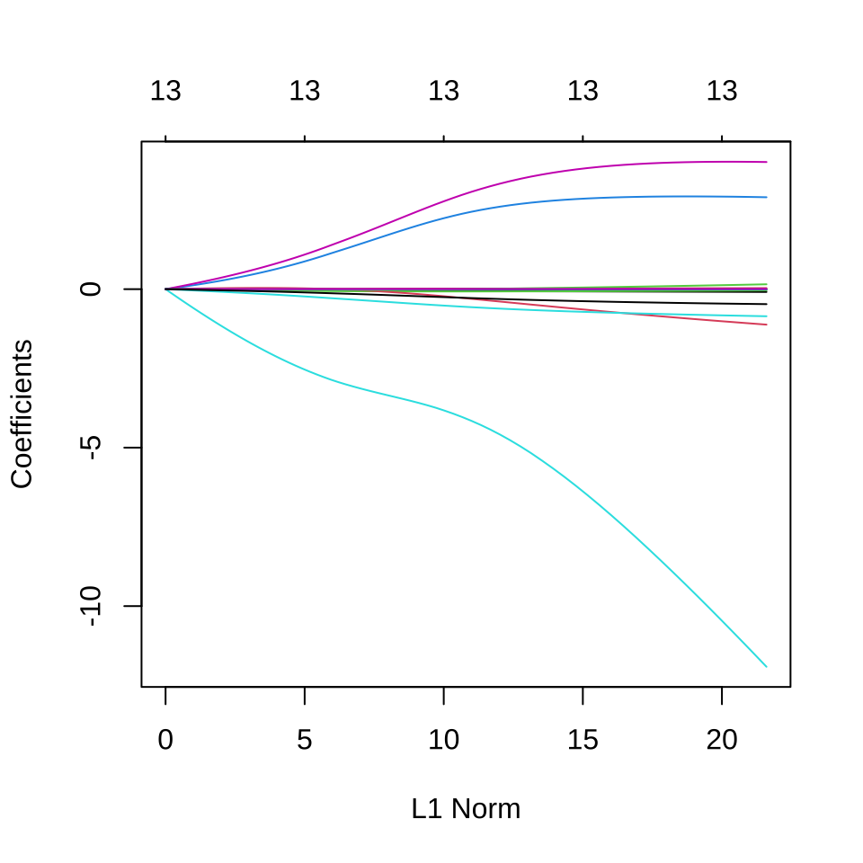
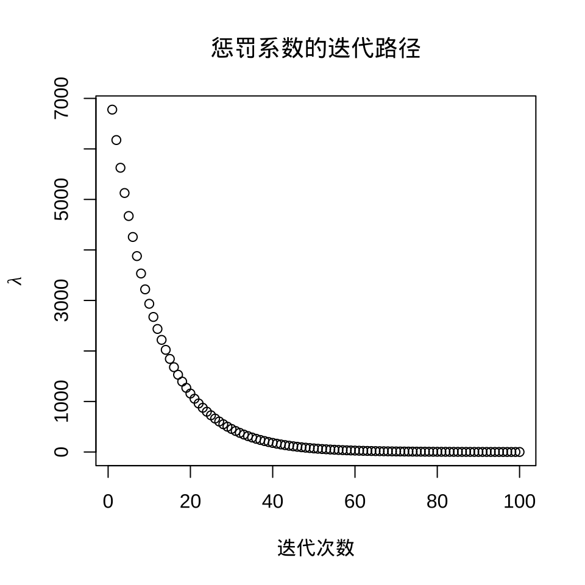
#> [1] 28.00535#> 14 x 1 sparse Matrix of class "dgCMatrix"
#> s1
#> (Intercept) 23.047750109
#> crim -0.045815821
#> zn 0.014330186
#> indus -0.063634086
#> chas 1.358311700
#> nox -3.075514644
#> rm 1.653490217
#> age -0.009926222
#> dis -0.025465898
#> rad -0.026390778
#> tax -0.002435665
#> ptratio -0.331740062
#> black 0.004145613
#> lstat -0.15139640642.2.2 Lasso 回归
Lasso 回归
\[ \mathcal{L}(\bm{\beta}) = \sum_{i=1}^{n}(y_i - \bm{x}_i^{\top}\bm{\beta})^2 + \lambda\|\bm{\beta}\|_1 \]
plot(fit_lasso)
plot(fit_lasso$lambda,
ylab = expression(lambda), xlab = "迭代次数",
main = "惩罚系数的迭代路径"
)
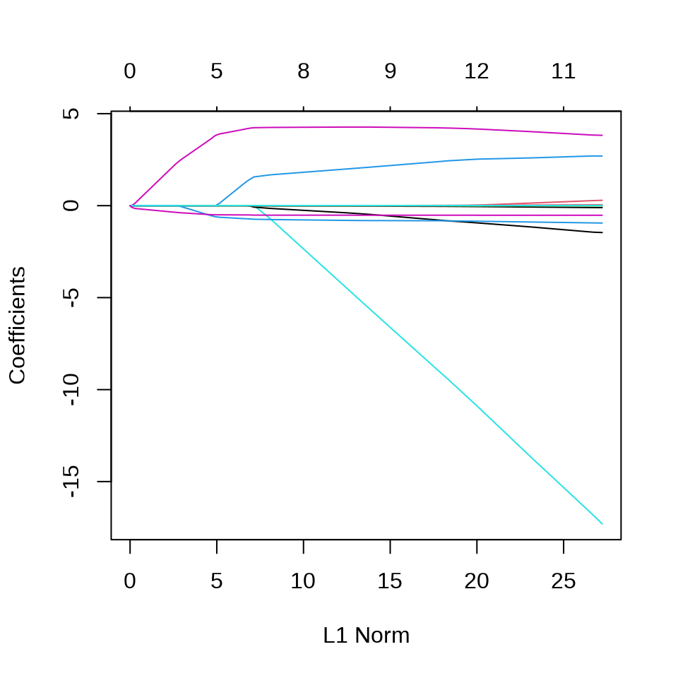
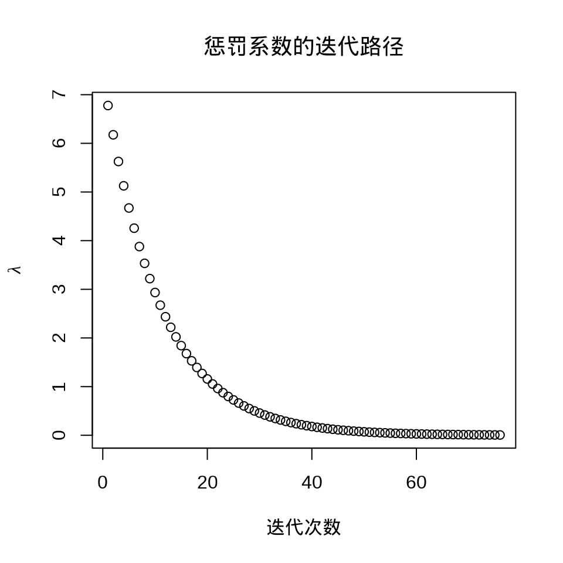
#> [1] 0.02800535#> 14 x 1 sparse Matrix of class "dgCMatrix"
#> s1
#> (Intercept) 34.426424733
#> crim -0.098346337
#> zn 0.041441612
#> indus .
#> chas 2.685187735
#> nox -16.306645191
#> rm 3.866938879
#> age .
#> dis -1.396021610
#> rad 0.252686499
#> tax -0.009826799
#> ptratio -0.929988657
#> black 0.009025875
#> lstat -0.52249983942.2.3 弹性网络
弹性网络 (Zou 和 Hastie 2005)
\[ \mathcal{L}(\bm{\beta}) = \sum_{i=1}^{n}(y_i - \bm{x}_i^{\top}\bm{\beta})^2 + \lambda(\frac{1-\alpha}{2}\|\bm{\beta}\|_2^2 + \alpha \|\bm{\beta}\|_1) \]
plot(fit_elasticnet)
plot(fit_elasticnet$lambda,
ylab = expression(lambda), xlab = "迭代次数",
main = "惩罚系数的迭代路径"
)
#> [1] 0.02800535#> 14 x 1 sparse Matrix of class "dgCMatrix"
#> s1
#> (Intercept) 34.426424733
#> crim -0.098346337
#> zn 0.041441612
#> indus .
#> chas 2.685187735
#> nox -16.306645191
#> rm 3.866938879
#> age .
#> dis -1.396021610
#> rad 0.252686499
#> tax -0.009826799
#> ptratio -0.929988657
#> black 0.009025875
#> lstat -0.52249983942.2.4 自适应 Lasso
自适应 Lasso (Zou 2006)
\[ \mathcal{L}(\bm{\beta}) = \sum_{i=1}^{n}(y_i - \bm{x}_i^{\top}\bm{\beta})^2 + \lambda_n\sum_{j=1}^{p}\frac{1}{w_j}|\beta_j| \]
普通最小二乘估计或岭回归估计的结果作为适应性 Lasso 回归的权重。其中 \(w_j = (|\hat{\beta}_{ols_j}|)^{\gamma}\) 或 \(w_j = (|\hat{\beta}_{ridge_j}|)^{\gamma}\) ， \(\gamma\) 是一个用于调整自适应权重向量的正常数，一般建议的正常数是 0.5，1 或 2。
# 岭权重 gamma = 1
g <- 1
set.seed(20232023)
## 岭回归
ridge_model <- cv.glmnet(
x = as.matrix(Boston[, -14]),
y = Boston[, 14], alpha = 0
)
ridge_coef <- as.matrix(coef(ridge_model, s = ridge_model$lambda.min))
ridge_weight <- 1 / (abs(ridge_coef[-1, ]))^g
## Adaptive Lasso
set.seed(20232023)
fit_adaptive_lasso <- cv.glmnet(
x = as.matrix(Boston[, -14]),
y = Boston[, 14], alpha = 1,
penalty.factor = ridge_weight # 惩罚权重
)岭回归和自适应 Lasso 回归模型的超参数
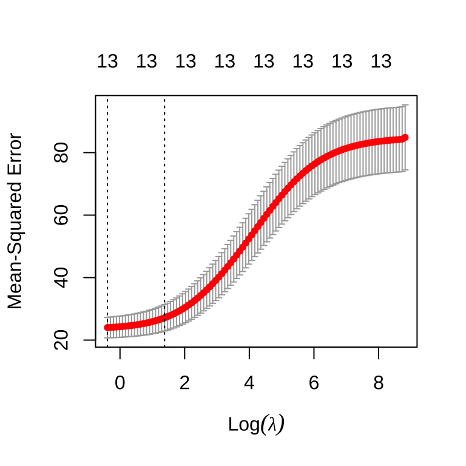
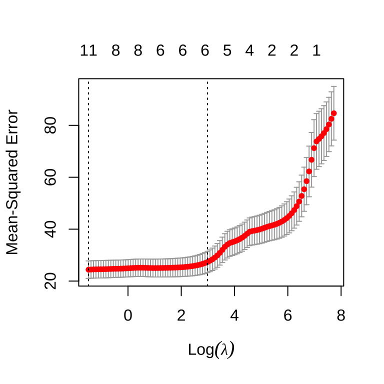
\(\lambda\) 超参数
自适应 Lasso 回归参数
#> 14 x 1 sparse Matrix of class "dgCMatrix"
#> s1
#> (Intercept) 38.291419779
#> crim -0.098901950
#> zn 0.023328430
#> indus -0.016769750
#> chas 3.119585761
#> nox -20.461629406
#> rm 3.946726706
#> age .
#> dis -1.354180874
#> rad 0.100046239
#> tax .
#> ptratio -1.019940695
#> black 0.002119703
#> lstat -0.545149921预测
预测的均方根误差
42.2.5 松弛 Lasso
Lasso 回归倾向于将回归系数压缩到 0，松弛 Lasso
\[ \hat{\beta}_{relax}(\lambda,\gamma) = \gamma \hat{\beta}_{lasso}(\lambda) + (1 - \gamma)\hat{\beta}_{ols}(\lambda) \]
其中，\(\gamma \in[0,1]\) 是一个超参数。
CV 交叉验证筛选出来的超参数 \(\lambda\) 和 \(\gamma\) ，\(\gamma = 0\) 意味着松弛 Lasso 退化为 OLS 估计
松弛 Lasso 回归系数与 OLS 估计的结果一样
#> 14 x 1 sparse Matrix of class "dgCMatrix"
#> s1
#> (Intercept) 36.386415340
#> crim -0.107642467
#> zn 0.046225884
#> indus 0.019914638
#> chas 2.692467531
#> nox -17.703655696
#> rm 3.817657573
#> age .
#> dis -1.478133649
#> rad 0.303685310
#> tax -0.012233266
#> ptratio -0.951640287
#> black 0.009315797
#> lstat -0.523702685松弛 Lasso 预测
42.2.6 MCP
ncvreg 包 (Breheny 和 Huang 2011) 提供额外的两种非凸/凹惩罚类型，分别是 MCP （minimax concave penalty）和 SCAD（smoothly clipped absolute deviation）。
回归系数
#> (Intercept) crim zn indus chas nox
#> 14.9613035 0.0000000 0.0000000 0.0000000 0.2355167 0.0000000
#> rm age dis rad tax ptratio
#> 4.6134961 0.0000000 0.0000000 0.0000000 0.0000000 -0.7607830
#> black lstat
#> 0.0000000 -0.5847017#> Using a basic kernel estimate for local fdr; consider installing the ashr package for more accurate estimation. See ?local_mfdr#> MCP-penalized linear regression with n=506, p=13
#> At lambda=0.8500:
#> -------------------------------------------------
#> Nonzero coefficients : 4
#> Expected nonzero coefficients: 0.01
#> Average mfdr (4 features) : 0.001
#>
#> Estimate z mfdr Selected
#> lstat -0.5847 -17.956 < 1e-04 *
#> rm 4.6135 13.940 < 1e-04 *
#> ptratio -0.7608 -8.381 < 1e-04 *
#> chas 0.2355 3.831 0.0051025 *10 折交叉验证，选择超参数 \(\lambda\)
fit_mcp_cv <- cv.ncvreg(
X = Boston[, -14], y = Boston[, "medv"],
penalty = "MCP", seed = 20232023
)
summary(fit_mcp_cv)#> MCP-penalized linear regression with n=506, p=13
#> At minimum cross-validation error (lambda=0.1800):
#> -------------------------------------------------
#> Nonzero coefficients: 11
#> Cross-validation error (deviance): 23.45
#> R-squared: 0.72
#> Signal-to-noise ratio: 2.60
#> Scale estimate (sigma): 4.843
#> MCP-penalized linear regression with n=506, p=13
#> At lambda=0.1800:
#> -------------------------------------------------
#> Nonzero coefficients : 11
#> Expected nonzero coefficients: 0.08
#> Average mfdr (11 features) : 0.007
#>
#> Estimate z mfdr Selected
#> lstat -0.52253 -17.314 < 1e-04 *
#> dis -1.49319 -14.590 < 1e-04 *
#> rm 3.80092 12.392 < 1e-04 *
#> rad 0.29997 12.118 < 1e-04 *
#> ptratio -0.94664 -9.510 < 1e-04 *
#> nox -17.38650 -9.347 < 1e-04 *
#> tax -0.01179 -9.220 < 1e-04 *
#> zn 0.04587 4.963 < 1e-04 *
#> crim -0.10852 -4.330 0.0010795 *
#> black 0.00929 3.936 0.0053435 *
#> chas 2.71850 3.204 0.0713275 *在 \(\lambda = 0.1362\) 时，交叉验证的误差最小，非 0 回归系数 11 个。
42.2.7 SCAD
#> (Intercept) crim zn indus chas
#> 9.3713059437 0.0000000000 0.0000000000 0.0000000000 0.3518918853
#> nox rm age dis rad
#> 0.0000000000 4.7729149463 0.0000000000 0.0000000000 0.0000000000
#> tax ptratio black lstat
#> 0.0000000000 -0.5040003090 0.0002038813 -0.6030152355#> SCAD-penalized linear regression with n=506, p=13
#> At lambda=0.8500:
#> -------------------------------------------------
#> Nonzero coefficients : 5
#> Expected nonzero coefficients: 0.01
#> Average mfdr (5 features) : 0.002
#>
#> Estimate z mfdr Selected
#> lstat -0.6030152 -18.329 < 1e-04 *
#> rm 4.7729149 14.274 < 1e-04 *
#> ptratio -0.5040003 -7.888 < 1e-04 *
#> chas 0.3518919 4.002 0.0027534 *
#> black 0.0002039 3.673 0.0093789 *10 折交叉验证，选择超参数 \(\lambda\)
fit_scad_cv <- cv.ncvreg(
X = Boston[, -14], y = Boston[, "medv"],
penalty = "SCAD", seed = 20232023
)
summary(fit_scad_cv)#> SCAD-penalized linear regression with n=506, p=13
#> At minimum cross-validation error (lambda=0.1362):
#> -------------------------------------------------
#> Nonzero coefficients: 11
#> Cross-validation error (deviance): 23.45
#> R-squared: 0.72
#> Signal-to-noise ratio: 2.60
#> Scale estimate (sigma): 4.843
#> SCAD-penalized linear regression with n=506, p=13
#> At lambda=0.1362:
#> -------------------------------------------------
#> Nonzero coefficients : 11
#> Expected nonzero coefficients: 0.08
#> Average mfdr (11 features) : 0.007
#>
#> Estimate z mfdr Selected
#> lstat -0.522521 -17.314 < 1e-04 *
#> dis -1.492829 -14.586 < 1e-04 *
#> rm 3.801459 12.393 < 1e-04 *
#> rad 0.299790 12.111 < 1e-04 *
#> ptratio -0.946635 -9.509 < 1e-04 *
#> nox -17.381556 -9.345 < 1e-04 *
#> tax -0.011784 -9.215 < 1e-04 *
#> zn 0.045846 4.961 < 1e-04 *
#> crim -0.108459 -4.328 0.0010887 *
#> black 0.009291 3.936 0.0053408 *
#> chas 2.718640 3.204 0.0712933 *在 \(\lambda = 0.1362\) 时，交叉验证的误差最小，非 0 回归系数 11 个。
42.2.8 最小角回归
lars 包提供 Lasso 回归和最小角（Least Angle）回归(Bradley Efron 和 Tibshirani 2004)。
library(lars)
# Lasso 回归
fit_lars_lasso <- lars(
x = as.matrix(Boston[, -14]), y = as.matrix(Boston[, "medv"]),
type = "lasso", trace = FALSE, normalize = TRUE, intercept = TRUE
)
# LAR 回归
fit_lars_lar <- lars(
x = as.matrix(Boston[, -14]), y = as.matrix(Boston[, "medv"]),
type = "lar", trace = FALSE, normalize = TRUE, intercept = TRUE
)参数 type = "lasso" 表示采用 Lasso 回归，参数 trace = FALSE 表示不显示迭代过程，参数 normalize = TRUE 表示每个变量都标准化，使得它们的 L2 范数为 1，参数 intercept = TRUE 表示模型中包含截距项，且不参与惩罚。
Lasso 和最小角回归系数的迭代路径见下图。
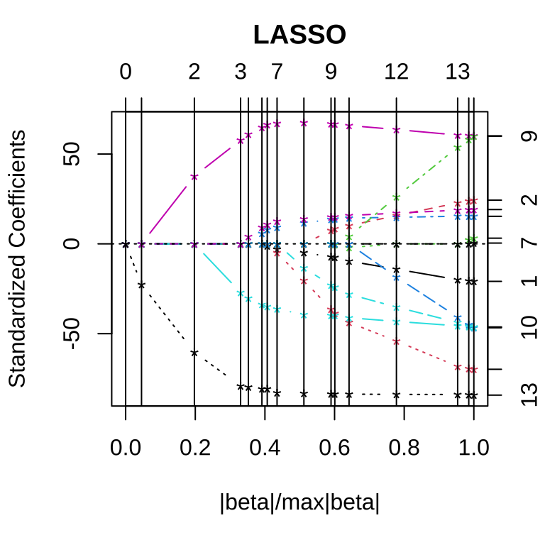
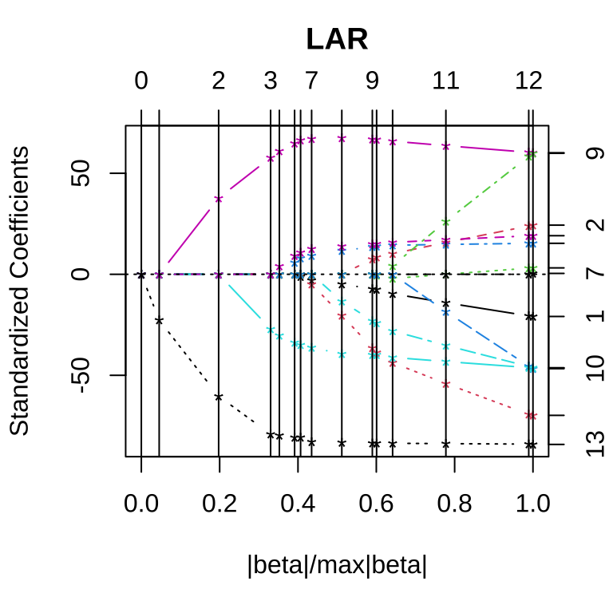
采用 10 折交叉验证筛选变量
set.seed(20232023)
cv.lars(
x = as.matrix(Boston[, -14]), y = as.matrix(Boston[, "medv"]),
type = "lasso", trace = FALSE, plot.it = TRUE, K = 10
)
set.seed(20232023)
cv.lars(
x = as.matrix(Boston[, -14]), y = as.matrix(Boston[, "medv"]),
type = "lar", trace = FALSE, plot.it = TRUE, K = 10
)
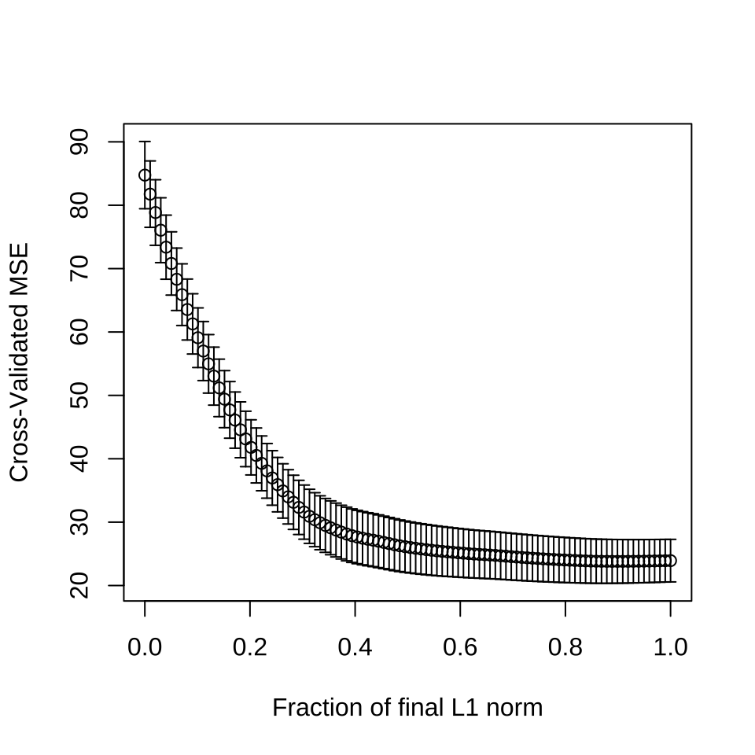
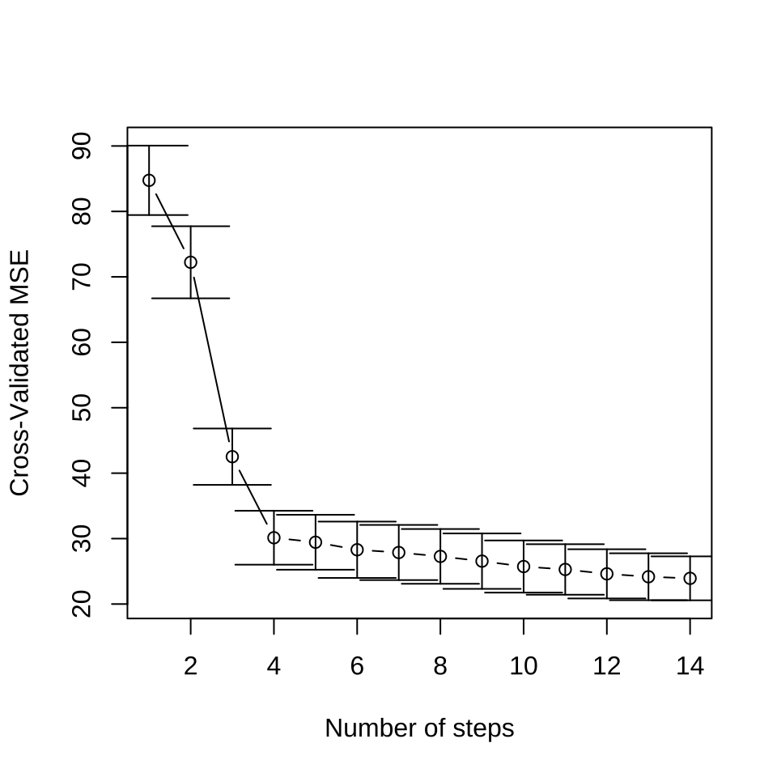
42.2.9 最优子集回归
\[ \mathcal{L}(\bm{\beta}) = \sum_{i=1}^{n}(y_i - \bm{x}_i^{\top}\bm{\beta})^2 + \lambda\|\bm{\beta}\|_0 \]
最优子集回归，添加 L0 惩罚，abess 包 (Zhu 等 2022) 支持线性回归、泊松回归、逻辑回归、多项回归等模型，可以非常高效地做最优子集筛选变量。
参数 tune.type = "cv" 表示交叉验证的方式确定超参数来筛选变量，参数 nfolds = 10 表示将数据划分为 10 份，采用 10 折交叉验证，参数 seed 用来设置随机数，以便可重复交叉验证 CV 的结果。惩罚系数的迭代路径见下左图。使用交叉验证筛选变量个数，不同的 support size 表示进入模型中的变量数目。
plot(fit_abess, label = TRUE, main = "惩罚系数的迭代路径")
plot(fit_abess, type = "tune", main = "交叉验证筛选变量个数")
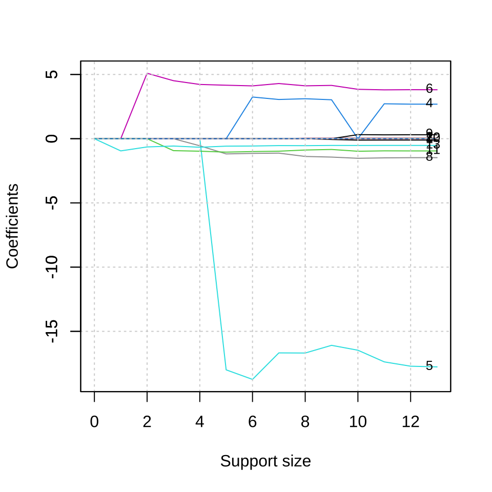
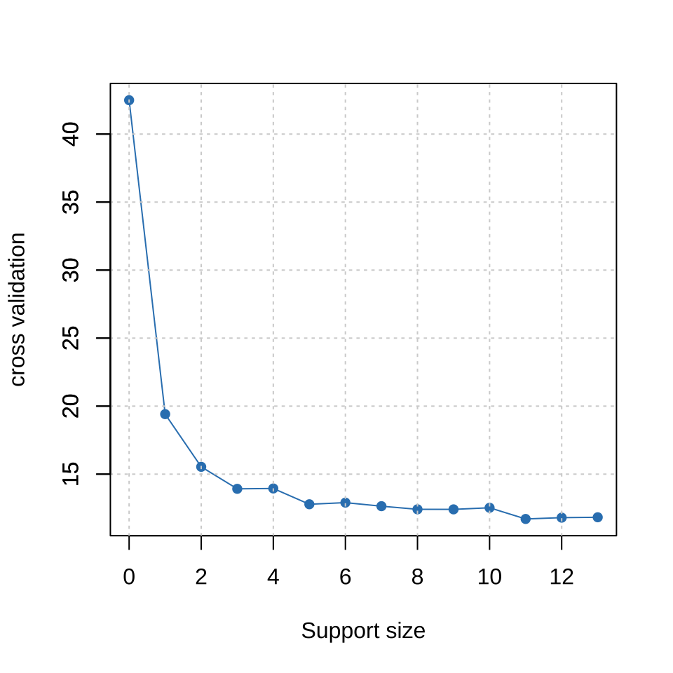
从上右图可以看出，选择 6 个变量是比较合适的，作为最终的模型。
#> List of 7
#> $ beta :Formal class 'dgCMatrix' [package "Matrix"] with 6 slots
#> .. ..@ i : int [1:6] 3 4 5 7 10 12
#> .. ..@ p : int [1:2] 0 6
#> .. ..@ Dim : int [1:2] 13 1
#> .. ..@ Dimnames:List of 2
#> .. .. ..$ : chr [1:13] "crim" "zn" "indus" "chas" ...
#> .. .. ..$ : chr "6"
#> .. ..@ x : num [1:6] 3.24 -18.74 4.11 -1.14 -1 ...
#> .. ..@ factors : list()
#> $ intercept : num 36.9
#> $ support.size: num 6
#> $ support.vars: chr [1:6] "chas" "nox" "rm" "dis" ...
#> $ support.beta: num [1:6] 3.24 -18.74 4.11 -1.14 -1 ...
#> $ dev : num 12
#> $ tune.value : num 12.942.3 支持向量机
#> Support Vector Machine object of class "ksvm"
#>
#> SV type: eps-svr (regression)
#> parameter : epsilon = 0.1 cost C = 1
#>
#> Gaussian Radial Basis kernel function.
#> Hyperparameter : sigma = 0.104370906070485
#>
#> Number of Support Vectors : 339
#>
#> Objective Function Value : -79.5434
#> Training error : 0.09646842.4 神经网络
单隐藏层的神经网络
42.5 决策树
42.6 随机森林
#>
#> Call:
#> randomForest(formula = medv ~ ., data = Boston)
#> Type of random forest: regression
#> Number of trees: 500
#> No. of variables tried at each split: 4
#>
#> Mean of squared residuals: 9.733755
#> % Var explained: 88.47#> [1] 1.38033242.7 集成学习
# 输入数据 x 和采样比例 prop
add_mark <- function(x = Boston, prop = 0.7) {
idx <- sample(x = nrow(x), size = floor(nrow(x) * prop))
rbind(
cbind(x[idx, ], mark = "train"),
cbind(x[-idx, ], mark = "test")
)
}
set.seed(20232023)
Boston_df <- add_mark(Boston, prop = 0.7)
library(data.table)
Boston_dt <- as.data.table(Boston_df)
# 训练数据
Boston_train <- list(
data = as.matrix(Boston_dt[Boston_dt$mark == "train", -c("mark", "medv")]),
label = as.matrix(Boston_dt[Boston_dt$mark == "train", "medv"])
)
# 测试数据
Boston_test <- list(
data = as.matrix(Boston_dt[Boston_dt$mark == "test", -c("mark", "medv")]),
label = as.matrix(Boston_dt[Boston_dt$mark == "test", "medv"])
)library(xgboost)
Boston_xgb <- xgboost(
data = Boston_train$data,
label = Boston_train$label,
objective = "reg:squarederror", # 学习任务
eval_metric = "rmse", # 评估指标
nrounds = 6
)#> [1] train-rmse:17.424982
#> [2] train-rmse:12.641765
#> [3] train-rmse:9.241521
#> [4] train-rmse:6.833056
#> [5] train-rmse:5.139463
#> [6] train-rmse:3.949495